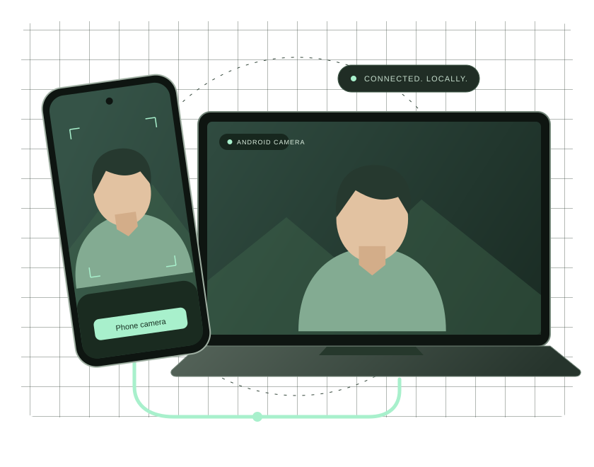

Plug in. Find your angle.
Connect your phone with a USB data cable for a direct link to your Mac. Enable USB debugging and authorize your Mac on the phone.
Requires Android Platform Tools (adb). Setup & Diagnostics checks for it.
A NEW VIEW. SAME PHONE.
Put the camera you already own to work. WAMC brings your Android camera to your Mac over USB or local Wi-Fi.
Android + macOS · Video stays on your devices

01 / MAKE THE CONNECTION
A cable at your desk. Wi-Fi when you need room to move.
Connect your phone with a USB data cable for a direct link to your Mac. Enable USB debugging and authorize your Mac on the phone.
Requires Android Platform Tools (adb). Setup & Diagnostics checks for it.
WAMC discovers your phone on the same Wi-Fi network. Choose Trust & Connect the first time, then use your trusted device.
Router blocking discovery? Use the manual address option.
02 / KEEP IT IN YOUR CONTROL
Choose a camera, adjust quality, and rotate the view. Keep the Mac preview open, or let WAMC work from the menu bar.
Switch between available phone cameras and rotate the image to suit your setup.
Best, High, and Balanced profiles. HEVC when both devices negotiate it, with AVC as the fallback.
Use the native Mac menu-bar controls. Closing the preview window keeps virtual-camera delivery running.
03 / FROM PHONE TO CAMERA MENU
Download the Android APK and Mac DMG from the same public release. Move WAMC to Applications, open it, and grant the requested permissions.
Allow the Android Camera extension in macOS settings. Open WAMC on your phone, allow camera access, then connect over USB or trusted Wi-Fi.
Start your stream in WAMC. Select Android Camera in your video app and confirm you see moving video.
Need a hand? Open Setup & Diagnostics from the WAMC menu bar for installation, permissions, and connection checks.
04 / CHECK YOUR SETUP
Check the requirements before downloading.
YOUR PHONE
Currently validated on Samsung SM-E236B running Android 14. Other Android devices have not yet been verified.
YOUR COMPUTER
The Mac download is for Apple silicon. Camera-extension and privacy approvals are required during setup.
YOUR VIDEO APP
Verified in FaceTime and Photo Booth. Zoom, Google Meet, Teams, and OBS are intended consumers; compatibility checks remain pending.
GOOD TO KNOW
No. Camera streaming travels over USB or your local Wi-Fi network, without a cloud relay. Internet access is needed for downloads and update checks.
No. WAMC sends video only. Select your Mac microphone or another microphone in your calling or recording app.
WAMC requests activation during setup. On newer macOS versions, open System Settings → General → Login Items & Extensions → Camera Extensions and enable WAMC → Android Camera. The location can vary by macOS version; Setup & Diagnostics provides guidance.
Keep both devices on the same Wi-Fi network and enable Wi-Fi discovery on the phone. Some routers block local discovery. Use the Mac app’s manual address option or connect over USB.
Both apps check once per launch and ask before downloading an update. Installation waits until streaming stops. Downloads are distributed through GitHub Releases.
READY WHEN YOU ARE
Get the Android APK and Apple silicon Mac DMG.
Install both apps from the same release.
Opens the WAMC v0.2.2 GitHub release.
Android 8.0+ · macOS 14+ · Apple silicon